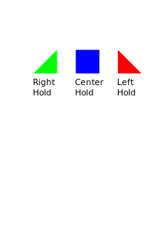

1.) Page Opened, 22nd Dec 2023.
The goal of this assignment is to investigate some preliminary ideas for a motion planner for a rock climbing robot.
This assignment is only done in simulation, but we will host the competition for physical robots during FIRA 2024.
The assignment must be done in groups of no more than 2 students.
Rock climbing is an interesting and challenging problem for humans and robots.
Professional climbers are able to scale impressive boulders.
'''
'''
I beleive it will be several decades before robots will match the skills of humans in this regard. Here is a video of one of our first attempts at a rock climbing robot.
'''
'''
Note that you only need to implement a simpile simulation of the robot to complete your motion planner.
We would like to extend our previous work by adding several different types of holds, similar to the ones in a rock climbing gym.
The field is a vertical wall of a given size (width * height). Various holds are setup in that wall.
We design three different holds that have different properties.

The center hold will support any contacts, whereas the left and right holds will only support if the robot is to the right or the left of the hold respectively.
The robot is modeled as a rectangle of size 15cm * 20cm (for the torso). Arms and legs are mounted on the vertices of the rectangle.
The arms and legs have a minimum length of 7cm and a maximum length of 14cm. The arms and legs can rotate 360 deg.
In this assignment, we will only consider the kinematics of the robot.
Implement a program to generate randomized bouldering environments by putting various holds onto a playing field.
We consider a position stable is the robot is able to hold at least three holds.
Implement a path planner that can select a series of arms and leg motions and holds, so that the robot can climb up the wall.
You can use standard weak methods in AI (e.g., depth first search, breadth first search, and hill climbing) or a heuristic search method (A*).
Another approach is to use reinforcemenet learning.
Implement at least two algorithms and compare their performance on a series of bouldering problems.
By submitting an assignment, you claim that your submission is only your own work. This means that you have developed the design, implemented the code, run the experiments, and all other work necessary to complete the assignment by yourself.
If you discussed your work with other students or used sources on the Internet, then you must say so clearly at the beginning of the assignment.
You can discuss parts of the assignment with others, but these discussions must be limited to sharing ideas on a whiteboard or notepad. If you exchange code/programs/designs or exchange any material via the Internet, then you must say so in your honesty declaration.
Fill out the Honesty Declaration and add any external sources that you used during the assignment.
This assignment must be done in groups of maximal two students.
If you use information or code that is not your own (e.g., sample code from the Internet, ideas for new features from a classmate, etc.), then you must specify this in your assignment write-up. Failure to disclose that you used external sources will lead to disciplinary actions.
To hand in your assignment: